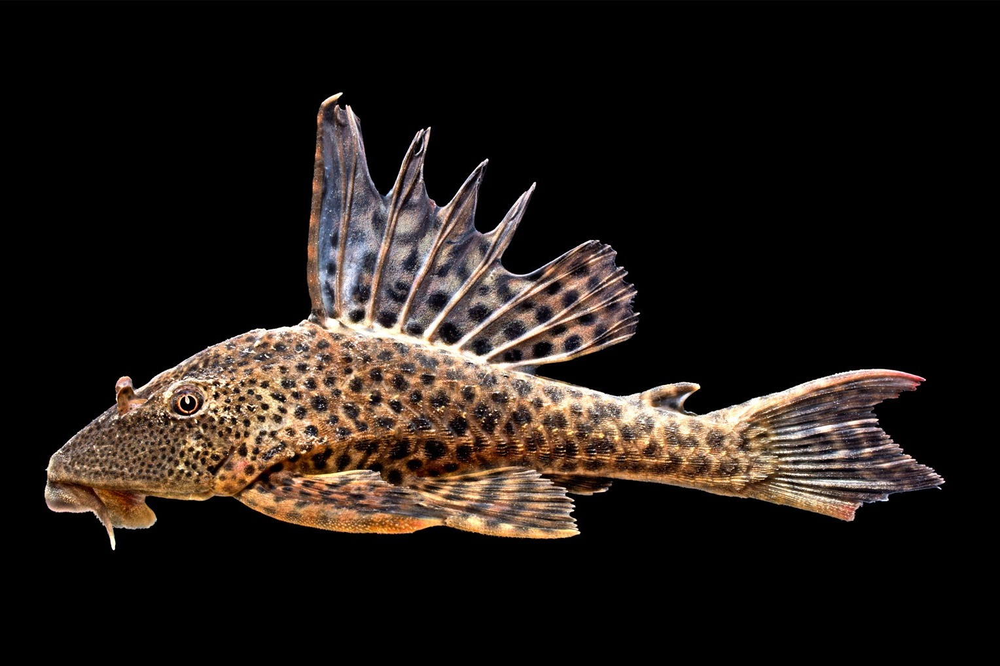

Pléco (Pléco commun)
Hypostomus plecostomus
MoyenEau douceloricariidaenettoyeurgros-poisson
Difficulté :
Moyen
Température
20 – 28 °C
pH
6.8 – 7.2
GH
5 – 20
KH
3 – 15
Volume min.
600 L
Taille adulte
28 cm
Comportement
Détritivore, souvent benthique; peut devenir territorial.
Compatibilité
Compatible avec poissons non agressifs; nécessite grand volume adulte.
Alimentation
Détritovore/herbivore: algues, granulés, légumes cuits.
Reproduction
Reproduction complexe en captivité; nécessite conditions spécifiques.
À retenir : Attention à la taille adulte; éviter bacs trop petits.